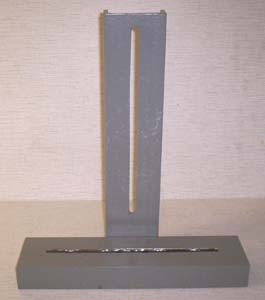
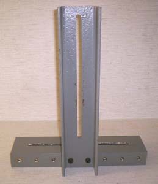

Универсальная малогабаритная станина (стойка, штатив)
 
Станина задумана как универсальный узел для конструировании различного вида оборудования. Кроме того, на ней можно закреплять различные инструменты и приспособления. Станина состоит из двух стальных швеллеров (ширина 100 мм) - горизонтального (длина 400 мм) и вертикального (длина 450 мм). Горизонтальный швеллер устанавливается на ровной поверхности пола или стола. Вертикальный швеллер с помощью двух винтов с гайками крепится к горизонтальному, имеющему ряд отверстий. На швеллерах сделаны продольные прорези, используя которые, можно закреплять в необходимом положении узлы конструируемого оборудования или инструмент. Небольшие размеры и масса (7 кг) станины позволяют использовать ее в небольших производственных помещениях с ограниченной площадью.
Примеры применения универсальной малогабаритной станины:
28.09.2006
18.02.2010
Альтернативные источники
энергии
Компьютеры и
Интернет
Магнитные поля
Механотронные системы
Перспективные
разработки
Электроника и технология